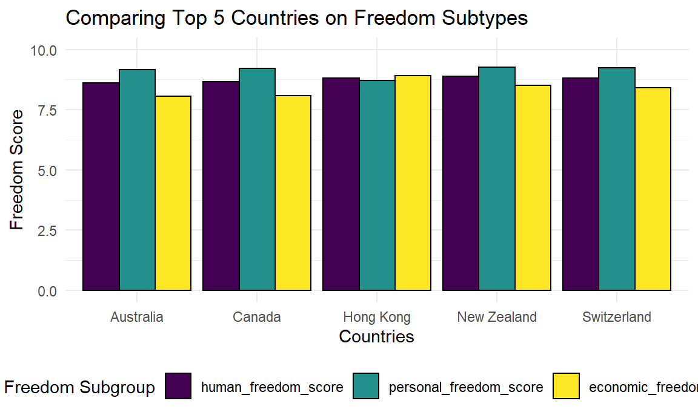
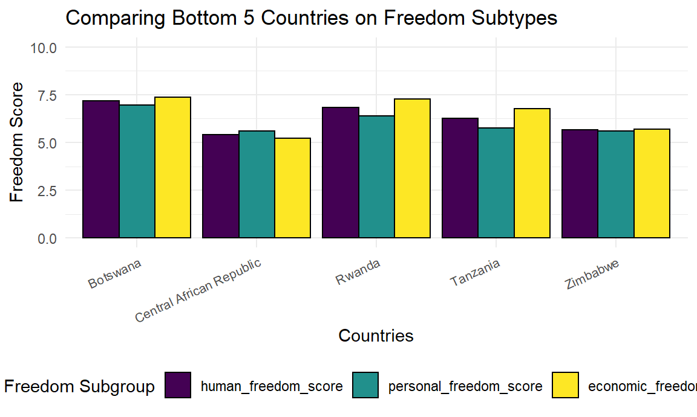
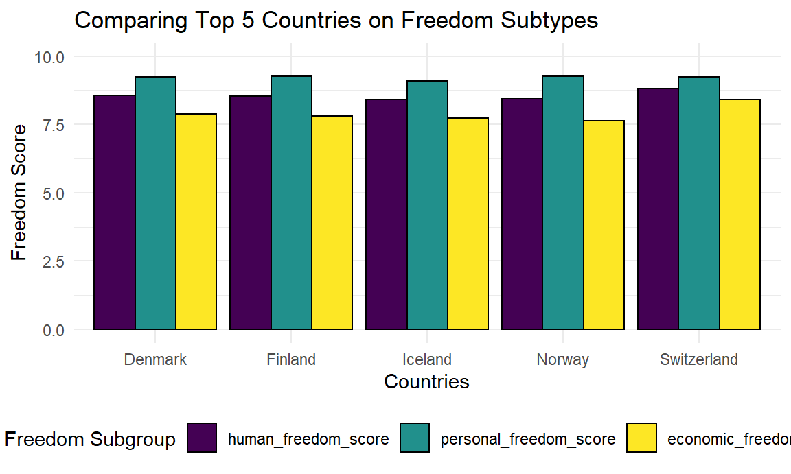

As a part of our exploratory analyses, we wanted to examine the relationship between human freedom scores and happiness scores for the highest scoring and lowest scoring countries for each metric. We also wanted to look at the subcomponents of the human freedom scores to see if the top scoring or lowest scoring countries had similarities across these metrics. Below, you will find the tabs for each metric with analysis of the 5 highest and 5 lowest scoring countries for that given metric.
| countries | human_freedom_score | happiness_score | personal_freedom_score | economic_freedom_score |
|---|---|---|---|---|
| Venezuela | 3.800 | 5.053 | 5.027 | 2.580 |
| Yemen | 4.300 | 3.527 | 2.750 | 5.840 |
| Iraq | 4.340 | 4.785 | 3.468 | 5.210 |
| Egypt | 4.500 | 4.151 | 3.946 | 5.050 |
| Libya | 4.640 | 5.489 | 4.833 | 4.450 |
| bot5_hfi_average | 4.316 | 4.601 | 4.005 | 4.626 |
| bot5_hfi_sd | 0.319 | 0.772 | 0.948 | 1.246 |
As we can see here, the countries with the five lowest human freedom scores have some variety in their happiness scores and in their freedom subscores. For example, Venezuela has the lowest overall human freedom score among the bottom 5 countries, but its happiness score is one of the highest in the group. Interestingly, Venezuela has the highest personal freedom score of the bottom 5 countries, but it has the lowest economic freedom score, keeping its overall score low.
bot5_hfi %>%
select(-happiness_score) %>%
pivot_longer(
human_freedom_score:economic_freedom_score,
names_to = "freedom_subgroup",
values_to = "score"
) %>%
mutate(freedom_subgroup = fct_relevel(freedom_subgroup, "human_freedom_score", "personal_freedom_score",
"economic_freedom_score")) %>%
ggplot(aes(x = countries, y = score, fill = freedom_subgroup)) +
geom_bar(stat = "identity", color = "black", position = position_dodge()) +
ylim(min = 0, max = 10) +
ggtitle("Comparing Bottom 5 Countries on Freedom Subtypes") +
xlab("Countries")+
ylab("Freedom Score")+
labs(fill = "Freedom Subgroup")As seen above, there is a good amount of variety in freedom subgroups between the bottom 5 countries.
| countries | human_freedom_score | happiness_score | personal_freedom_score | economic_freedom_score |
|---|---|---|---|---|
| New Zealand | 8.880 | 7.300 | 9.269 | 8.500 |
| Switzerland | 8.820 | 7.560 | 9.237 | 8.400 |
| Hong Kong | 8.810 | 5.510 | 8.700 | 8.910 |
| Canada | 8.650 | 7.232 | 9.223 | 8.080 |
| Australia | 8.620 | 7.223 | 9.161 | 8.070 |
| top5_hfi_average | 8.756 | 6.965 | 9.118 | 8.392 |
| top5_hfi_sd | 0.114 | 0.825 | 0.237 | 0.347 |
There appears to be little variety across these scores for the top 5 countries in the freedom scores. However, Hong Kong is a clear outlier in terms of happiness score.
top5_hfi %>%
select(-happiness_score) %>%
pivot_longer(
human_freedom_score:economic_freedom_score,
names_to = "freedom_subgroup",
values_to = "score"
) %>%
mutate(freedom_subgroup = fct_relevel(freedom_subgroup, "human_freedom_score", "personal_freedom_score",
"economic_freedom_score")) %>%
ggplot(aes(x = countries, y = score, fill = freedom_subgroup)) +
geom_bar(stat = "identity", color = "black", position = position_dodge()) +
ylim(min = 0, max = 10) +
ggtitle("Comparing Top 5 Countries on Freedom Subtypes") +
xlab("Countries")+
ylab("Freedom Score")+
labs(fill = "Freedom Subgroup")
The countries look more or less the same in terms of freedom subtypes.
| score | top5_hfi_average | top5_hfi_sd | bot5_hfi_average | bot5_hfi_sd |
|---|---|---|---|---|
| human_freedom_score | 8.75600 | 0.1141490 | 4.31600 | 0.3185593 |
| happiness_score | 6.96496 | 0.8245495 | 4.60112 | 0.7715590 |
This table is showing the mean and the standard deviations among the bottom 5 and top 5 countries across the two main metrics. The means for human freedom score among the top 5 and bottom 5 countries are dramatically different, while the means for happiness score are a bit closer to one another and the standard deviations are quite high. The high standard deviations for the happiness scores seem to indicate that the countries’ scores for happiness score are more spread out in both the top 5 and bottom 5 groups.
hfi_combo = full_join(bot5_hfi, top5_hfi)
hfi_combo %>%
mutate(text_label = str_c(countries, "\nFreedom Score:", human_freedom_score, "\nHappiness Score: ", happiness_score)) %>%
plot_ly(x = ~ human_freedom_score, y = ~happiness_score, type = "scatter", mode = "markers", size = 3, alpha = 0.5, color = ~countries, text = ~text_label, colors = "viridis") %>%
layout(title = "Comparing Top 5 and Bottom 5 Human Freedom Scoring Countries",
xaxis = list(title = "Human Freedom Score"),
yaxis = list(title = "Happiness Score"))This plot compares the top 5 and bottom 5 countries for human freedom scores. You can see that there is a good amount of variety in happiness scores among the top 5 and bottom 5 countries. Libya and Hong Kong have very similar happiness scores, which seems to indicate that high freedom scores do not necessarily mean that the population living in those countries are happier. Still, there is quite a divide in happiness scores across the other countries in the top 5 and bottom 5.
| countries | happiness_score | human_freedom_score | personal_freedom_score | economic_freedom_score |
|---|---|---|---|---|
| Zimbabwe | 3.299 | 5.650 | 5.608 | 5.690 |
| Rwanda | 3.312 | 6.820 | 6.378 | 7.260 |
| Central African Republic | 3.476 | 5.410 | 5.593 | 5.230 |
| Tanzania | 3.476 | 6.260 | 5.748 | 6.770 |
| Botswana | 3.479 | 7.170 | 6.970 | 7.370 |
| bot5_whr_average | 3.409 | 6.262 | 6.059 | 6.464 |
| bot5_whr_sd | 0.094 | 0.748 | 0.602 | 0.958 |
The bottom 5 countries for happiness scores are quite uniform, with a very small standard deviation and very little difference between the countries’ scores. However, they are quite different across freedom scores, with Botswana scoring pretty highly overall and in the two subtypes of freedom score. Additionally, it is interesting to note that there is no overlap between the bottom 5 countries in terms of happiness and the bottom 5 countries in terms of human freedom scores.
bot5_whr %>%
select(-happiness_score) %>%
pivot_longer(
human_freedom_score:economic_freedom_score,
names_to = "freedom_subgroup",
values_to = "score"
) %>%
mutate(freedom_subgroup = fct_relevel(freedom_subgroup, "human_freedom_score", "personal_freedom_score",
"economic_freedom_score")) %>%
ggplot(aes(x = countries, y = score, fill = freedom_subgroup)) +
geom_bar(stat = "identity", color = "black", position = position_dodge()) +
ylim(min = 0, max = 10) +
ggtitle("Comparing Bottom 5 Countries on Freedom Subtypes") +
xlab("Countries")+
ylab("Freedom Score")+
labs(fill = "Freedom Subgroup")+
theme(axis.text.x = element_text(size = 8, angle = 25, hjust = 1))
This chart shows further that the freedom scores for the countries with the lowest happiness scores are roughly similar, with the Central African Republic and Zimbabwe having lower scores than the others. Interestingly, these countries all seem to have pretty similar economic and personal freedom scores.
| countries | happiness_score | human_freedom_score | personal_freedom_score | economic_freedom_score |
|---|---|---|---|---|
| Finland | 7.809 | 8.530 | 9.269 | 7.800 |
| Denmark | 7.646 | 8.560 | 9.238 | 7.890 |
| Switzerland | 7.560 | 8.820 | 9.237 | 8.400 |
| Iceland | 7.504 | 8.410 | 9.085 | 7.740 |
| Norway | 7.488 | 8.440 | 9.260 | 7.620 |
| top5_whr_average | 7.601 | 8.552 | 9.218 | 7.890 |
| top5_whr_sd | 0.131 | 0.162 | 0.076 | 0.301 |
As with the bottom 5 countries, there is a good amount of uniformity in happiness scores among the top 5 scoring countries. The human freedom scores for these countries are also quite high. The most striking similarity between the top 5 happiness countries is that they all have very high personal freedom scores.
top5_whr %>%
select(-happiness_score) %>%
pivot_longer(
human_freedom_score:economic_freedom_score,
names_to = "freedom_subgroup",
values_to = "score"
) %>%
mutate(freedom_subgroup = fct_relevel(freedom_subgroup, "human_freedom_score", "personal_freedom_score",
"economic_freedom_score")) %>%
ggplot(aes(x = countries, y = score, fill = freedom_subgroup)) +
geom_bar(stat = "identity", color = "black", position = position_dodge()) +
ylim(min = 0, max = 10) +
ggtitle("Comparing Top 5 Countries on Freedom Subtypes") +
xlab("Countries")+
ylab("Freedom Score")+
labs(fill = "Freedom Subgroup")
This chart shows that, unlike the bottom 5 countries for happiness scores, there is less uniformity between economic and personal freedom scores. All countries have very high personal freedom scores, but there is more variation in the economic freedom scores. It is interesting to note that four of the top 5 countries for happiness score are Nordic countries.
whr_table =
rbind(top5_whr_merge, bot5_whr_merge) %>%
filter(countries %in% c("top5_whr_average", "top5_whr_sd", "bot5_whr_average", "bot5_whr_sd")) %>%
select(countries, human_freedom_score, happiness_score) %>%
pivot_longer(human_freedom_score:happiness_score,
names_to = "score",
values_to = "aaah"
) %>%
pivot_wider(
names_from = "countries",
values_from = "aaah"
)
whr_table %>% knitr::kable()| score | top5_whr_average | top5_whr_sd | bot5_whr_average | bot5_whr_sd |
|---|---|---|---|---|
| human_freedom_score | 8.55200 | 0.1620802 | 6.2620 | 0.7477098 |
| happiness_score | 7.60134 | 0.1312425 | 3.4085 | 0.0939190 |
This table shows that the values for both human freedom scores and happiness scores among the top 5 countries for happiness are quite uniform in their distribution around the mean. On the other hand, the human freedom score standard deviation for the bottom 5 countries on happiness score is quite high, indicating that the scores are more spread out around the mean. The happiness score standard deviation for the bottom 5 countries, though, are very close to one another.
whr_combo = full_join(bot5_whr, top5_whr)
whr_combo %>%
mutate(text_label = str_c(countries, "\nHappiness Score: ", happiness_score, "\nFreedom Score:", human_freedom_score)) %>%
plot_ly(x = ~happiness_score, y = ~human_freedom_score, type = "scatter", mode = "markers", size = 3, alpha = 0.5, color = ~countries, text = ~text_label, colors = "viridis") %>%
layout( title = "Comparing Top 5 and Bottom 5 Happiness Scoring Countries",
xaxis = list(title = "Happiness Score"),
yaxis = list(title = "Human Freedom Score")
)This plot visually shows that the bottom 5 countries for happiness score vary across human freedom scores, while the top 5 countries are clustered together with very similar scores for both happiness and human freedom.